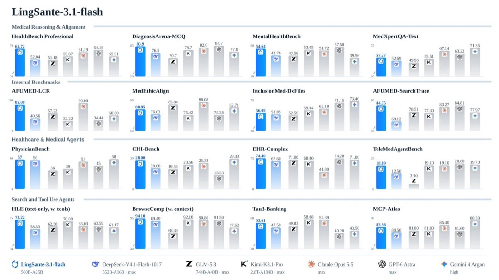
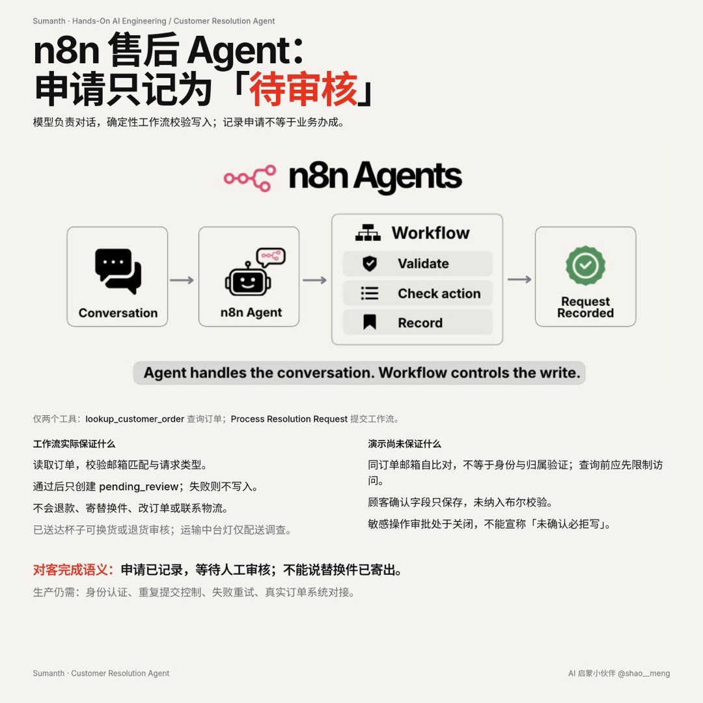
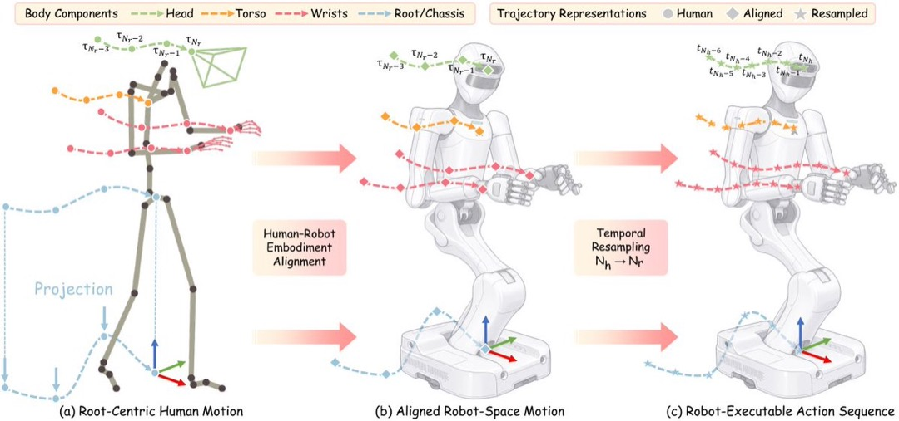

本期速览
01 Koigrid按RAM计费降云账单近八成
02 LingSante医疗MoE开源权重发布
03 Heretic改权重移除模型拒绝机制
04 n8n售后Agent分离对话与业务写入
06 DexRoam人体示教提升操作成功率
01｜Koigrid按RAM计费降云账单近八成
来源（X） · @manuelcas000 · 2026-11-19 23:04
中文译文
你可以把 DigitalOcean 的账单削减约 79%。
3 × 2 GB + 每月 4 TB 出口流量：
DigitalOcean 约 $143（其中约 $68 是出流量费）
Koigrid 约 $30
原因：Koigrid 按小时为你预留的 RAM 计费，出流量包含在内。
1. 注册
2. 创建 API token
3. 告诉 Claude Code 或 OpenCode 进行部署
原文
You can cut your DigitalOcean bill by ~79%.
3 × 2 GB + 4 TB/mo:
DigitalOcean ~$143 (~$68 is egress)
Koigrid ~$30
Why: Koigrid bills the RAM you reserve, by the hour, egress included.
1. Sign up
2. Create an API token
3. Tell Claude Code or OpenCode to deploy
02｜LingSante医疗MoE开源权重发布
来源（X） · @AntLingAGI · 2026-11-22 23:22
中文译文
今天，我们发布 LingSante-3.1-flash，这是一个开放权重的 MoE 模型，总参数量 560B，每个 token 激活 25B 参数。它在保留通用能力的同时，统一了多种医疗能力，包括复杂医疗推理、长周期工作流执行和专业行为对齐。
LingSante-3.1-flash 从医疗问答走向真实世界的医疗问题。该模型在 HealthBench Professional（65.72）、HLE（纯文本，使用工具：72.22）和 BrowseComp（使用上下文：94.10）上领先，在这三项上均优于 GPT-6 Astra、Claude Opus 5.5 和 Gemini 4 Argon。LingSante-3.1-flash 在专业长周期医疗工作流方面也表现出色，例如 PhysicianBench（57）和 EHR-Complex（74.40）。
这些结果共同确立了 LingSante-3.1-flash 作为医疗健康领域领先的开放权重模型的地位。
权重已开放。探索 LingSante 并基于它进行构建。
更多内容见下方 ↓
原文
Today, we release LingSante-3.1-flash, an open-weight MoE model with 560B total parameters and 25B activations per token. It unifies diverse medical capabilities while retaining general capabilities, including complex medical reasoning, long-horizon workflow execution, and professional behavior alignment.
LingSante-3.1-flash moves beyond medical QA toward real-world healthcare problem. The model leads on HealthBench Professional (65.72), HLE (text-only, with tools: 72.22) and BrowseComp (with context: 94.10), outperforming GPT-6 Astra, Claude Opus 5.5 and Gemini 4 Argon on all three. LingSante-3.1-flash also performs well on professional long-horizon medical workflows, such as PhysicianBench (57) and EHR-Complex (74.40).
Together, these results establish LingSante-3.1-flash as the leading open-weight models for healthcare.
The weights are available. Explore LingSante and build with it.
More below ↓

03｜Heretic改权重移除模型拒绝机制
来源（X） · @HeLi8866 · 2026-11-24 22:36
不是写越狱提示词，也不是钻系统漏洞，而是直接从模型权重层面下手。
项目名叫 Heretic，完全免费开源，目前 GitHub 已斩获 42.9K Stars🌟！
它的工作原理：⬇️
→ 传统的 Jailbreak 提示词只能尝试绕过当前对话的限制，并不会改变模型本身。
→ Heretic 则通过数学方法修改模型内部权重，调整模型的拒绝行为，无需重新训练。
→ 默认进行 100 轮参数优化实验，通过拒绝次数和 KL 散度评估不同修改方案的效果。
如何在本地使用？
1️⃣ 准备 Python 3.10+ 和 PyTorch 2.6+ 环境，也可以借助 Claude Code 完成环境配置。
2️⃣ 从 Hugging Face 选择兼容的开源模型，根据自己的显存大小选择合适的参数规模。
3️⃣ 安装并运行 Heretic，工具会自动完成模型加载、硬件检测和参数优化。官方测试中，RTX 3090 处理 Qwen3 4B 模型仅需 30～40 分钟。
4️⃣ 处理完成后，结合拒绝次数、KL 散度以及实际能力测试评估模型表现，避免过度修改导致模型能力受损。
5️⃣ 将处理后的模型保存到本地，根据格式兼容性进行转换，再导入 Ollama 或 LM Studio。
最终，你可以获得一个经过自定义修改、能够在自己电脑上离线运行的 AI 模型。
而且 Heretic 2.0 不仅能调整拒绝行为，还能减少 AI 味、抑制模型过度讨好用户等问题。
喜欢折腾本地大模型的兄弟，建议收藏！🔖
仓库链接： https://github.com/p-e-w/heretic
04｜n8n售后Agent分离对话与业务写入
来源（X） · @shao__meng · 2026-11-24 20:03
客服 Agent 的难点，往往出现在对话之后：什么时候能写入系统，写入意味着申请已记录，还是事情已经办成？Sumanth 介绍了开源合集 Hands-On AI Engineering 中的 Customer Resolution Agent，用一个虚构商店的售后场景，演示怎样分开对话与业务写入。
# Agent 查政策、补信息，工作流控制写入
演示使用 n8n Agents 的 Preview 聊天界面，知识库包含物流、破损或错件、退货退款、升级人工这 4 份政策，订单事实单独保存在 customer_orders 数据表。
Agent 只有两个工具：lookup_customer_order 按订单号查询；Process Resolution Request 调用一条确定性工作流，负责提交售后申请。模型可以决定何时查询、追问和提出方案，但不能直接向申请表任意写数据。
示例订单也有不同权限：已送达的旅行杯可以申请换货或退货审核，仍在运输中的台灯则只能发起配送调查。处理方式需要结合订单事实，不能只凭顾客一句要求。
# “已记录”与“已处理”，必须分清
写入工作流接收订单号、邮箱、处理类型、顾客确认内容和备注，再读取订单，检查邮箱是否匹配、请求类型是否属于允许范围。
通过后，它只创建一条 pending_review 记录；校验失败则不创建记录。它不会退款、发出替换件、修改订单或联系物流。
因此，演示中顾客确认杯盖破损并要求换货后，Agent 最终只能回复“申请已记录，等待人工审核”，不能声称替换件已经寄出。这种完成语义，比让回复听起来流畅更重要。
# 有工作流，不代表所有边界已经落实
这个示例有两个值得注意的缺口。
首先，邮箱由 Agent 从订单记录传入，再与同一记录比对，不能证明当前顾客拥有该订单。真实系统仍需登录态与订单归属验证，查询详情之前就应限制访问。
其次，顾客确认主要靠提示词要求。customer_confirmation 会被保存，却没有进入工作流的布尔校验条件；演示中的敏感操作审批也处于关闭状态。因此，不能将它理解为“未经顾客确认，程序一定拒绝写入”。
生产部署还需补上重复提交、失败重试、身份认证和真实订单系统对接。

引用内容
Sumanth @Sumanth_077
中文译文
原文
05｜字节小豆Agent邀请制上手教程
来源（X） · @0xlangeai · 2026-11-24 20:03
想试豆包旗下的个人助理「小豆」，这篇上手教程可以先看。
从邀请码、连接应用，到让它打电话订位、整理飞书文档、处理抖音收藏和评论、持续跟进任务，都梳理了一遍，还附了十多条能直接复制的指令。
先挑一个具体任务试，别一上来把所有权限都开了。目前仍是邀请制，部分能力来自产品演示和用户反馈，付费档位的额度细则也还没讲清。
https://x.com/arito_si/status/2125114757695041567
引用内容
Muon（ASI） @arito_si
06｜DexRoam人体示教提升操作成功率
来源（X） · @jiqizhixin · 2026-11-24 20:00
中文译文
在真实世界实验中，加入人类示范将 GR00T N1.7 的平均成功率从 29% 提升至 56%，将 pi-zero-point-five 从 32% 提升至 57%。
香港科技大学、北京智源人工智能研究院及合作研究人员在 arXiv 预印本中介绍了 DexRoam。
移动灵巧操作需要保留移动、身体动作和手指之间协调关系的示范。DexRoam 使用消费级 VR 头显和头戴式立体相机来捕捉第一视角的人类示范。三个对齐阶段将具身、动作语义和时序映射到机器人的动作空间。这使得人类示范与机器人示范兼容，可用于训练标准的视觉-语言-动作策略，同时保留连续的全身运动。
这些比较适用于论文中的任务和训练协议。该贡献将采集与对齐系统与策略学习相结合，因此数据传输流水线是被评估结果的一部分。
DexRoam: Learning Mobile Bimanual Dexterous Manipulation from Egocentric Whole-Body Human Demonstrations
论文：https://arxiv.org/abs/2609.35761v1
我们的报告：https://www.jiqizhixin.com/articles/2026-11-06-3?source=rss
📬 #PapersAccepted by 机器之心
原文
In real-world experiments, adding human demonstrations raises average success from 29% to 56% with GR00T N1.7, and from 32% to 57% with pi-zero-point-five.
HKUST, Beijing Academy of Artificial Intelligence and collaborating researchers introduce DexRoam in an arXiv preprint.
Mobile dexterous manipulation needs demonstrations that preserve the coordination between locomotion, body motion and fingers. DexRoam captures egocentric human demonstrations with a consumer VR headset and a head-mounted stereo camera. Three alignment stages map embodiment, action meaning and timing into the robot's action space. This makes the human demonstrations compatible with robot demonstrations for training standard vision-language-action policies, while retaining continuous whole-body motion.
These comparisons apply to the paper's tasks and training protocols. The contribution combines the capture and alignment system with policy learning, so the data-transfer pipeline is part of the evaluated result.
DexRoam: Learning Mobile Bimanual Dexterous Manipulation from Egocentric Whole-Body Human Demonstrations
Paper: https://arxiv.org/abs/2609.35761v1
Our Report: https://www.jiqizhixin.com/articles/2026-11-06-3?source=rss
📬 #PapersAccepted by Jiqizhixin

07｜MCP网关八款方案与选型要点
来源（X） · @ai_suxiaole · 2026-11-24 20:00
万一某个 Agent 越权调用了删除、退款等工具，谁来拦？
这时候就需要 MCP Gateway（MCP 网关）了。
最近看到一篇文章，整理了 8 个值得关注的 MCP 网关，覆盖开源自托管、云厂商和企业 API 管理方案。
8 个值得放进候选清单的 MCP Gateway：
Bifrost：MCP 聚合、权限控制、Token 优化
Kong AI Gateway：API 管理与 MCP 权限治理
LiteLLM：开源模型代理，支持 MCP Gateway
Amazon Bedrock AgentCore Gateway：AWS 原生托管方案
IBM ContextForge：MCP、REST、gRPC 服务统一接入
Azure API Management：微软 Azure 生态集成
Docker MCP Gateway：容器隔离运行 MCP Server
Cloudflare MCP Server Portals：统一入口与 Zero Trust 访问控制
选型主要看 6 件事：
工具级权限：能不能精确控制每个工具？
身份认证：能不能识别具体是哪个 Agent？
上游认证：能不能统一管理 OAuth 和凭证？
可观测性：能不能追踪完整调用链？
Context 成本：能不能减少大量工具描述占用的 Token？
部署位置：能不能私有化部署，满足数据安全要求？
文章最后提了两个特别值得关注的问题：
能不能在工具执行前拦截危险操作？
能不能不重新部署，就立即撤销某个 Agent 的权限？
这才是多 Agent 系统真正走向生产环境后，需要补上的基础设施。